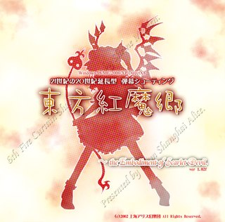

封面
TH06
东方红魔乡
the Embodiment of Scarlet Devil.| 发行年份 | 2002年8月11日 |
|---|---|
| 发行公司 | 上海爱丽丝幻乐团 |
| 游戏类型 | 弹幕射击游戏 |
剧情 幻想乡的夏天被一片红色的浓雾笼罩，阳光无法照到地面。博丽灵梦与雾雨魔理沙分别追查雾的源头，最终来到湖畔的红魔馆，与吸血鬼蕾米莉亚·斯卡蕾特对峙。
人物
- 露米娅
- 大妖精
- 琪露诺
- 红美铃
- 小恶魔
- 帕秋莉·诺蕾姬
- 十六夜咲夜
- 蕾米莉亚·斯卡蕾特
- 芙兰朵露·斯卡蕾特
特点 东方系列在 Windows 平台的第一作，确立了自机选择、擦弹、BOMB 与符卡（Spell Card）的基本框架，也是系列人气真正开始上升的起点。